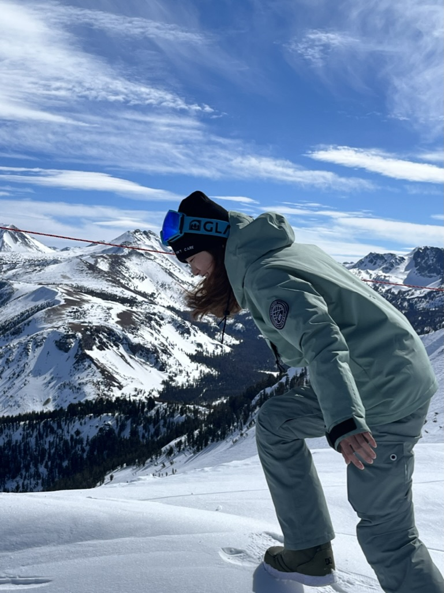

Hello there! I'm Nicole Z. Liu, a software engineer at Doordash in Portland, Oregon. My focus is on infrastructure, specializing in technologies like k8s, improving developer productivity, and building distributed systems.
Outside of work, I have a deep love for jazz music and am currently learning to play jazz piano. I also enjoy spending my free time snowboarding (started skiing this season as well and it's almost as much fun as boarding!) with Copper Mountain being my favorite spot. That being said, did you know they have musicians playing in the village every Friday at Aspen? Skiing in the morning, shake off the snow, then grab your bass, let's jam!
In my downtime, I find pleasure in people-watching at local cafes, observing the unique stories and moments that unfold around me. I also enjoy immersing myself in nature by diving into a serene lake.
So, that's a bit about me – a software engineer with a passion for jazz, snowboarding, and appreciating the beauty of everyday life. I'm always excited to connect with others and embrace new experiences.
Feel free to reach out to me: